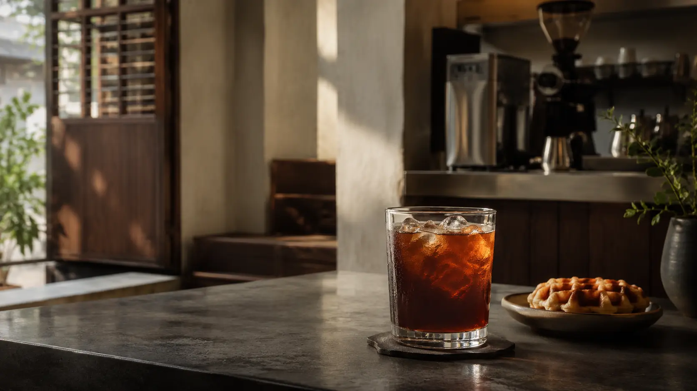
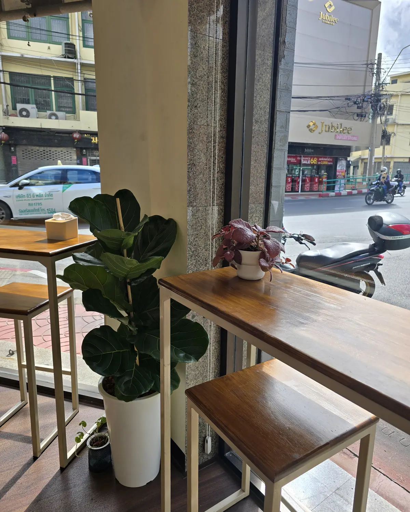

Bold, full-flavored coffee
We carefully balance every extraction for a consistently rich coffee character, at a price our customers can enjoy every day.

Charoen Krung · Bangkok
Carefully made coffee at a price you can enjoy every day. A neighborhood cafe that pays attention to everything from the beans to the ice in your glass.
Our story · Since 2023
LV99coffee opened in 2023, but the coffee at its heart carries a much longer story. Our recipe was passed on from Wee Coffee, a fixture of the Saphan Lek and Saphan Han neighborhood for decades, known as Thailand's first fresh-coffee street cart.
The owner of LV99coffee had been a loyal Wee Coffee customer for many years. When he learned that his favorite coffee shop would close and move to Chiang Rai, he could not bear to lose the bold, familiar flavor he had enjoyed for decades. He asked to learn the recipe and preparation, then carried that tradition forward under a new name so that he — and other customers — could continue enjoying the coffee they loved.
Having lived and worked around Sam Yot and Charoen Krung for many years, the owner created LV99coffee as a neighborhood cafe people can return to every day. LV99 comes from Level 99 — in gaming, the highest level and the idea of going all the way in what you do.
The details in every glass
The owner and his family are regular customers too. What we serve you is made to the same standard we choose for ourselves, from the strength of the coffee to every piece of ice.
We carefully balance every extraction for a consistently rich coffee character, at a price our customers can enjoy every day.
We use beans from Pacamara Coffee Roasters and work to keep the flavor consistent, so regular customers can return to the cup they know.
Our ice is produced in the shop from filtered water. Filters are replaced regularly, so we can look after the process from the water source to the ice in your glass.
LV99coffee at your door
Order LV99coffee through your preferred delivery app. Current items, prices and delivery times are shown on each platform.
Items, prices, service areas and delivery times are determined by each platform.

A pause before the next stop
“Step away from the heat and the pace of the street.”
While exploring or running errands around Sam Yot and Charoen Krung, come inside to cool down, watch the street through the window and spend a quiet moment with your favorite drink.
Simple seating and touches of greenery make the shop a relaxing stop before you continue through Bangkok's old town.
Take a break at LV99coffee ↗More than coffee
LV99coffee is also a practical stop for locals and travelers exploring Sam Yot and Charoen Krung.
With Hippo Power
A Hippo Power rental station is available inside the shop. Scan the QR code on the station to check current availability, instructions and fees directly with the provider.
With Bounce
Book and pay through the Bounce app or website, then show your booking confirmation to our staff when dropping off and collecting your luggage.
Book through Bounce ↗Available during shop hours. Prices, availability, bookings and service terms are set by Hippo Power and Bounce.
Customer voice
It was so nice to sit, relax and use the free Wi‑Fi. The dishes were meticulously prepared in an immaculate establishment.
From MRT Sam Yot
LV99coffee is at the entrance of Soi Charoen Krung 9, around 140 metres from MRT Sam Yot. Open Google Maps for an accurate walking route from your current location.
Open in Google Maps ↗The walking route may vary by station exit and your location. Please use Google Maps for the correct directions.
Come say hello
Entrance of Soi Charoen Krung 9, Charoen Krung Road
Ban Bat, Pom Prap Sattru Phai
Bangkok 10100
Monday–Saturday 07:30–16:30
Closed Sunday